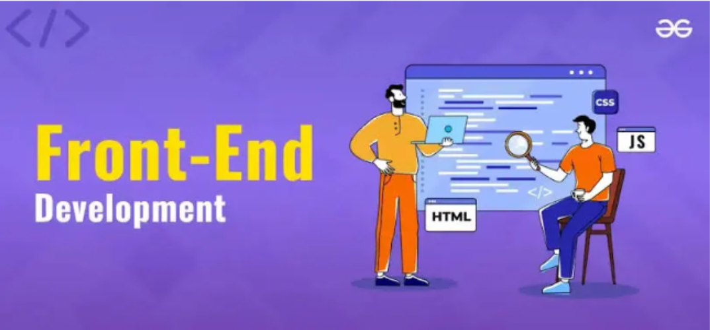
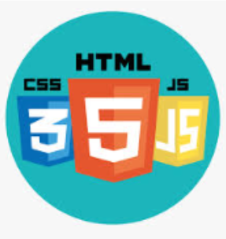

Giới thiệu về môn Frontend

Frontend là gì?
Frontend là phần quan trọng nhất của phát triển web, bao gồm mọi thứ mà người dùng có thể nhìn thấy và tương tác trực tiếp trên trang web.
Các công nghệ frontend phổ biến

- HTML: Ngôn ngữ đánh dấu siêu văn bản, là nền tảng để xây dựng cấu trúc của trang web.
- CSS: Ngôn ngữ để định dạng và tạo kiểu cho trang web, giúp trang web trở nên hấp dẫn và dễ dàng sử dụng.
- JavaScript: Ngôn ngữ lập trình giúp làm cho trang wed trở nên động, với các tính năng xử lí sự kiện, hiệu ứng động, và kết nối với máy chủ./li>
Vai trò của Frontend
Frontend giúp tạo ra một trải nghiệm người dùng mượt mà và dễ dàng tiếp cận. Những nhà phát triển frontend đảm bảo trang web tương tích trên các thiết bị và trình duyệt khác nhau.